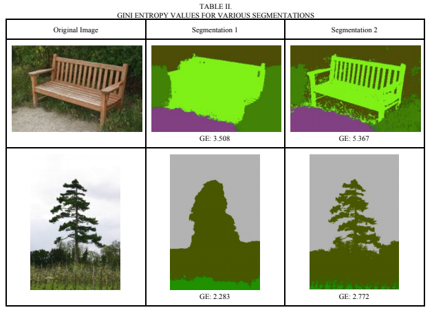
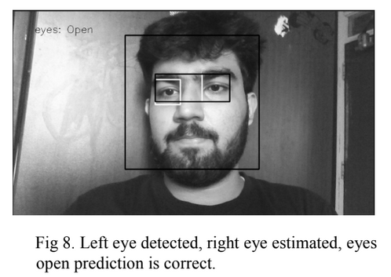
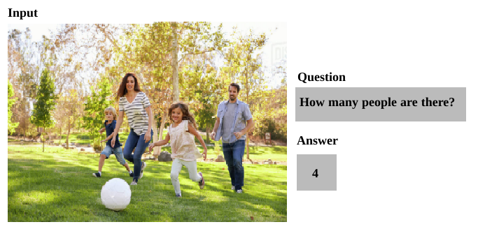
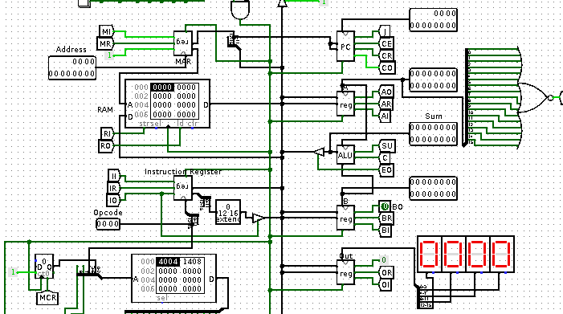

|
I am a Software Engineer at Microsoft, currently working on Microsoft Dataverse, a business application platform to store and manage data. I graduated in Computer Science and Engineering from Vellore Institute of Technology in 2020. I previously interned at Gmetri, an extended reality start-up, where I wrote a Content Delivery Network to deliver images with on-the-fly transformations. My broad interests are distributed systems and designing robust, highly scalable software. |
Publications
|  |
Gini index and entropy based evaluation: A retrospective study and proposal of evaluation method
for image segmentation.
NCCS 2018
[paper]
|
|  |
Eye state detection for use in advanced driver assistance systems
ICRTAC 2018
|
Side Projects
|  |
Visual Question Answering
VQA provides a multi-layered understanding of pictures and allows answering questions in natural
language about the objects in it. A knowledge graph is generated out of entities, their
attributes and their relationships. It is then used to create a reading comprehension which
uses Microsoft’s R-NET to answer questions based on it.
[code]
|
|  |
Simple RISC Machine (SRM)
SRM is a Turing complete 16-bit RISC CPU based on the Von Neumann architecture. Inspired
by Albert Paul Malvino's SAP processor and Ben Eater's 8-bit computer, SRM is a simulation
in Logisim. Its assembler is written in Python.
|

|
Peditor
Peditor is a lightweight text editor. It supports syntax highlighting.
[code]
|
Talks
|
HydPy: Writing your own container in python
Feb 29, 2020
Containers are ubiquitous. We use container software like Dockers and Linux Containers (LXCs)
every day without knowing what goes inside that black box. In this talk, we explored the
principles of containerization and how it functions in the Linux ecosystem. We wrote a mini
container in Python on top of Linux.
|
|
VIT, Chennai: Introduction to peer-to-peer (p2p) systems
Sep 01, 2021
In this talk, we looked at basic overview of centralized systems, distributed systems and p2p systems with their trade-offs.
We then dived into three case studies of some common p2p systems - Napster, BitTorrent, and Chord.
|
Miscellaneous
- Btw, I use Arch
- I write occasionally
- I like playing guitar
- Hablo poco español